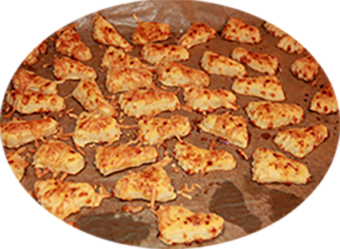

Bon pour l'apéro
Les brioches
Pour l'apéro
Verrine
Les pâtisseries
Les mousses
Les glaces
Pour le café
Le 4 heures
Les inclassables
Truc & astuce
Tartelettes au crabe
Palmiers olives & féta
Biscuits salés
Torsades au bacon & fromage
Biscuits salés & oignons
Cakes chévre & lardons
Escargots jambon & fromage
Bouchées d'olives croustillantes au fromage
Bouchées au parmesan, pesto,jambon
Bouchées vache qui rit et lardons
Tartelettes à l'avocat et crevettes
Biscuits croustillants au pesto
Palets comté poitrine fumée
Biscuits salés

Pour 6 personnes
Préparation : 10 mn
Cuisson : 10 mn
Ingrédients
1 rouleau de pâte feuilletée
100 gr de gruyère râpé
Sel (en grande quantité)
Poivre
Recette
Mettre le même volume de pâte brisée et de gruyère, mélanger le tout en y ajoutant sel et poivre
Aplatir, couper en petits carrés, mettre 10 mn au four à 210°